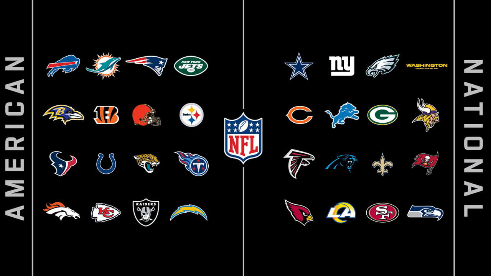

The first teams in the NFL were formed in 1920. The league itslef was officially established on August 20,1920 in Canton Ohio.
The oldest teams in the NFL are the Arizona Cardinals, founded in 1898 as the Morgan Athletic Club in Chicago, and the Green Bay Packers, founded in 1919.
 After the NFl grew to 32 clubs in 2002, the league restructured and went from having three divisions within each conference to having four divisions total. The number of wild card temas from each conference was reduced from three to two, with each division champion receiving a postseason bid.